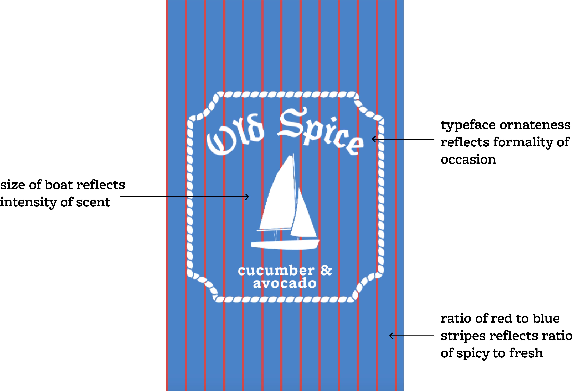
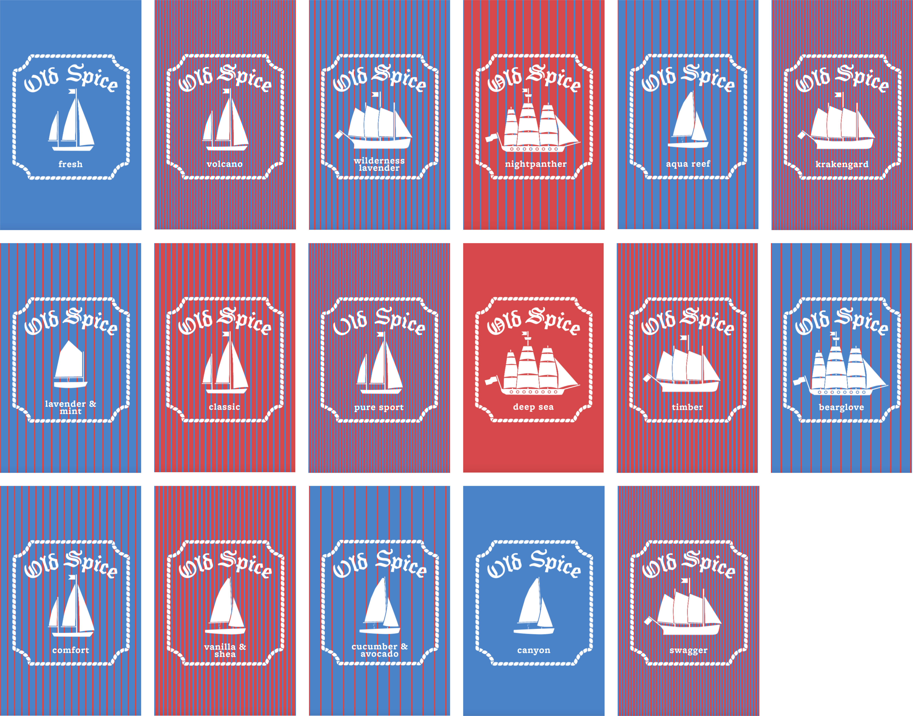
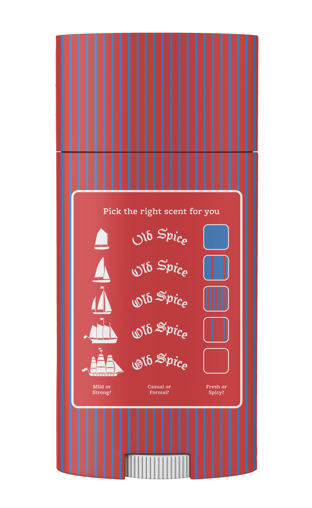

Packaging for the Senses
April 2024
Branding, Coding, Packaging
A packaging generator for Old Spice deodorant using a JavaScript CMS. The image, logo, and background all reflect different aspects of the experience of using each scent of deodorant. The generator allows for automated development of packaging for new scents through a linked spreadsheet.
My goal in this project was to remove some of the hypermasculine aspects from Old Spice’s current branding while maintaining its nautical imagery and humor. The final project uses these nautical themes along with bold colors to communicate the reliability of the deodorant for stinky sailors of any gender.
My goal in this project was to remove some of the hypermasculine aspects from Old Spice’s current branding while maintaining its nautical imagery and humor. The final project uses these nautical themes along with bold colors to communicate the reliability of the deodorant for stinky sailors of any gender.




